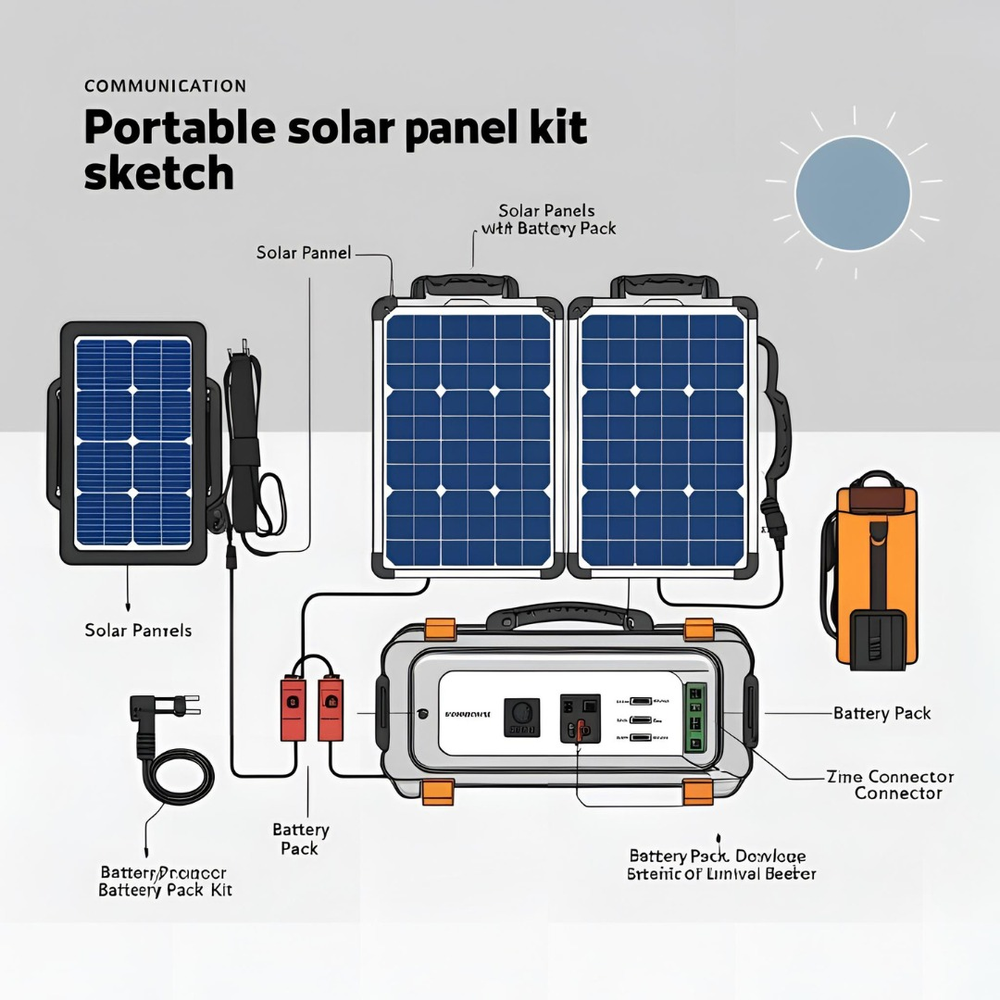

Esquema técnico del kit de paneles solares portátiles

Componentes del kit:
- Paneles Solares: Convierten la energía solar en electricidad.
- Panel solar con batería integrada: Combinación de captación y almacenamiento.
- Kit de conexión: Cables y conectores para vincular componentes.
- Battery Pack: Batería que almacena la energía generada por los paneles.
- Zime Connector: Puerto especializado para conectar la batería con distintos dispositivos.
- Controlador: Gestiona la carga, salidas USB, corriente alterna y protección del sistema.
↑